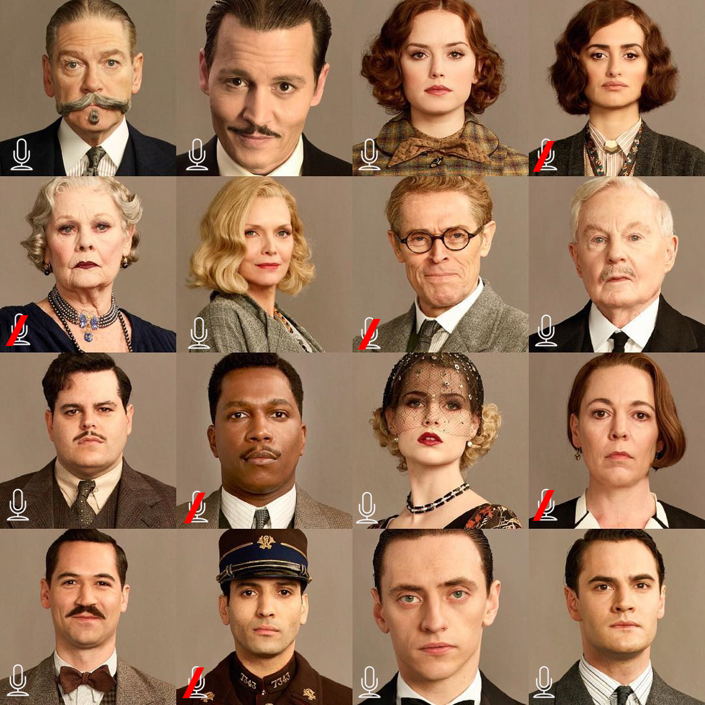
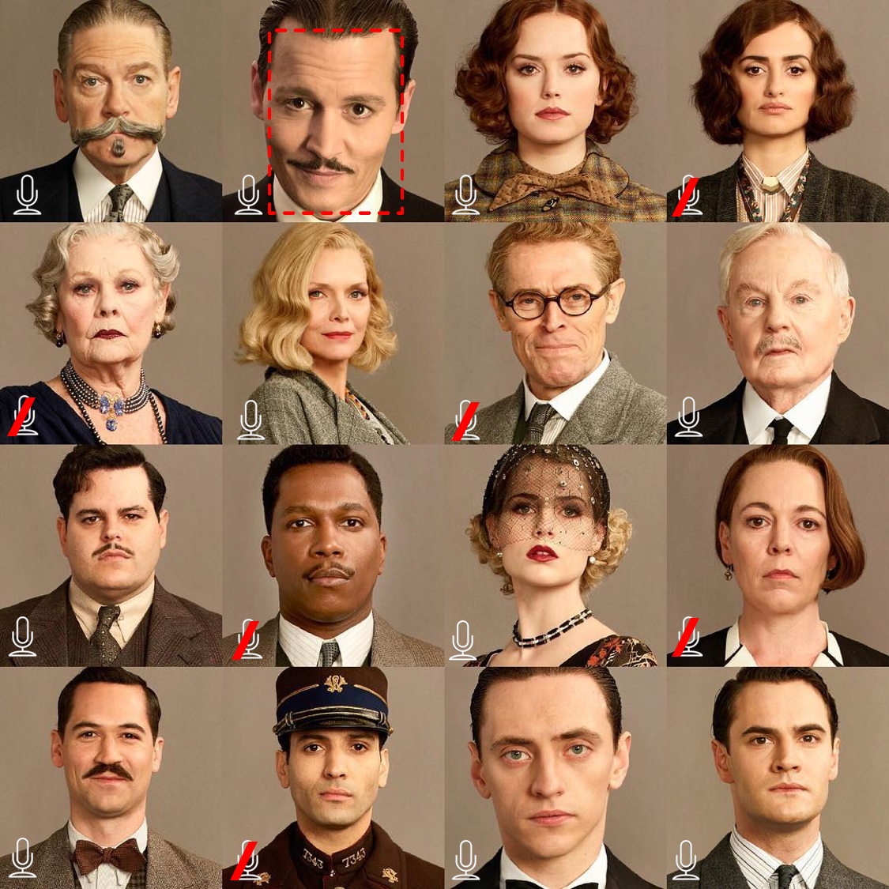

Using Amazon Rekognition from R
In this article we will demonstrate how to access Amazon Rekognition using the fabulous paws package, an AWS SDK for R, created by David Kretch and Adam Banker.
Amazon Rekognition is a service for image and video analysis which comes with pre-trained deep learning models and a simple API which makes it easy for developers to add these analytics capabilities to their applications.
Some of Amazon Rekognition’s features include:
- Object and scene detection
- Image moderation (checks if the image content is appropriate)
- Facial analysis
- Celebrity recognition
- Face comparison (looking for a facial match in an image based on a single training photo)
- Text in image (e.g. useful to analyze text in posted social media images which are usually inaccessible for filters)
In the examples below we will focus on how Rekognition’s “text-in-image” and “face comparison” features work using R. Following along it will be easy for you to apply your new knowledge to using the other features later on your own.
The entire code of this article is also part of the self-paced and fully reproducible AWS AI Services for R users workshop that you can download from GitHub here.
Prerequisites
In short, you need to have an IAM user with programmatic access to the AWS API and you need to save the user’s access key ID and secret access key as R environment variables:
AWS Cloud
-
It is a plus if you have some basic familiarity with the AWS Console.
-
You need to have access to an AWS account using an IAM user. AWS Free Tier does also work for this workshop.
-
The IAM user needs to come with security credentials (Access key ID, Secret access key) that allows him to make secure requests to AWS service APIs.
-
You need to make sure that the
AmazonRekognitionFullAccesspolicy is either attached to your IAM user directly or to a group your user is a member of. See the official documentation for changing permissions for an IAM user.
Local installations & configuration
- Install
pawsfrom CRAN usinginstall.packages("paws")and set the following environment variables in your.Renvironfile which is easiest to do usingusethis::edit_r_environ():
AWS_ACCESS_KEY_ID = [YOUR_ACCESS_KEY_ID]
AWS_SECRET_ACCESS_KEY = [YOUR_SECRET_ACCESS_KEY]
AWS_REGION = [CHOOSE_A_REGION_ID_LIKE_us-east-1]
Using AWS Rekognition following the examples below should come at no cost. As of writing this article, the service is part of AWS Free Tier, which lasts 12 months and allows you analyze 5,000 images per month and store 1,000 pieces of face metadata per month.
Some additional information about the API
You have two options to pass images for their analysis to Rekognition’s API endpoints. Either you pass the images as references to images already uploaded in an Amazon S3 bucket. Or you pass the images as raw bytes which means that the images need to reside in your computer’s memory.
Important: Both the paws documentation and the boto3 (official AWS SDK for Python) documentation mention to pass the images as base64-encoded images and not as raw bytes. Unfortunately, it seems that the documentation is not correct in either case because passing base64-encoded images in R did not work for me. This Stack Overflow post, where someone had the same issue in Python using boto3, made me switch successfully to passing raw bytes instead. So just make sure to think “raw bytes” every time you read “base64-encoded” in the paws or boto3 documentation of the Rekognition API.
OK, enough talking! Let’s get started.
Loading the necessary libraries
First we load the necessary libraries: Using paws is a no brainer here. We will use purrr’s magic and tibble to parse the responses of our API requests. We will use readr primarily to read binary data of image files and magick to add Bounding Boxes to images after having received their coordinates via an API response.
library(paws)
library(purrr)
library(tibble)
library(readr)
library(magick)
Creating an S3 bucket
First we need to create an S3 bucket to which we will upload our image files. We’ll create an S3 client and check if any buckets already exist in the region you specified in the .Renviron file:
# Create S3 client
s3 <- s3()
# Let us check if there is an S3 bucket we could use
buckets <- s3$list_buckets()
length(buckets$Buckets)
## [1] 0
Since there is not yet an S3 bucket available let us create one. Make sure to specify another bucket name since bucket names are globally unique.
s3$create_bucket(Bucket = "r-and-rekognition-bucket",
CreateBucketConfiguration = list(
LocationConstraint = "eu-central-1"))
## $Location
## [1] "http://r-and-rekognition-bucket.s3.amazonaws.com/"
buckets <- s3$list_buckets()
buckets <- map_df(buckets[[1]],
~tibble(name = .$Name, creationDate = .$CreationDate))
buckets
## # A tibble: 1 x 2
## name creationDate
## <chr> <dttm>
## 1 r-and-rekognition-bucket 2020-07-11 21:02:32
Let us store the name of our created bucket in a separate variable:
my_bucket <- buckets$name[buckets$name == "r-and-rekognition-bucket"]
Text-in-image detection
The first feature we will test is text detection in images. This will be our test image:
As explained above there are two ways to feed a Rekognition endpoint with image data: By referencing images residing in an S3 bucket or by sending the image as raw bytes. Let us check out both options.
Option 1: Referencing an image
Let us upload the image to the S3 bucket we just created.
s3$put_object(Bucket = my_bucket,
Body = read_file_raw("./images/tyrion_quote.jpg") ,
Key = "tyrion_quote.jpg")
## $Expiration
## character(0)
##
## $ETag
## [1] "\"aa5e8918fa049ae75d9b2bb6a484f488\""
##
## $ServerSideEncryption
## character(0)
##
## $VersionId
## character(0)
##
## $SSECustomerAlgorithm
## character(0)
##
## $SSECustomerKeyMD5
## character(0)
##
## $SSEKMSKeyId
## character(0)
##
## $SSEKMSEncryptionContext
## character(0)
##
## $RequestCharged
## character(0)
OK, that response from the endpoint acknowledging the upload looks rather cryptic. Let us check if our test image now really resides in our bucket.
bucket_objects <- s3$list_objects(my_bucket) %>%
.[["Contents"]] %>%
map_chr("Key")
bucket_objects
## [1] "tyrion_quote.jpg"
Perfect, everything worked as expected and our test file was uploaded successfully. Next, we need to create a Rekognition client for making the necessary API calls:
# Create a Rekognition client
rekognition <- rekognition()
# Referencing an image in an Amazon S3 bucket
resp <- rekognition$detect_text(
Image = list(
S3Object = list(
Bucket = my_bucket,
Name = bucket_objects
)
)
)
# Parsing the response
resp %>%
.[["TextDetections"]] %>%
keep(~.[["Type"]] == "WORD") %>%
map_chr("DetectedText")
## [1] "THAT'S" "WHAT" "I" "DO" "I" "DRINK" "AND" "I"
## [9] "KNOW" "THINGS"
Hurray! We used Rekognition the first time and the service delivered the correct results. What about sending the image in raw format instead?
Option 2: Sending the image as bytes
image <- read_file_raw("./images/tyrion_quote.jpg")
# Sending the image as raw bytes
resp <- rekognition$detect_text(
Image = list(
Bytes = image
)
)
# Parsing the response
resp %>%
.[["TextDetections"]] %>%
keep(~.[["Type"]] == "WORD") %>%
map_chr("DetectedText")
## [1] "THAT'S" "WHAT" "I" "DO" "I" "DRINK" "AND" "I"
## [9] "KNOW" "THINGS"
The second option also worked perfectly fine and delivered the same results. In the next section we will move on to test the other feature we are interested in.
Facial comparison
Facial comparison lets you look for a facial match in an image based on a single training photo you provided. It is best explained with a simple example.
Imagine the security camera caught a thief stealing your car in front of your house. The guy looks like this:
Rekognition can now be used to identify the thief in a photo of a group of people. By coincidence the police acquired a photo of the usual suspects who had a Web session together the same day in the area the car was stolen:

Is our thief among these people and can Rekognition identify him correctly?
We will skip uploading the two images to S3 and send them directly as raw bytes to the API endpoint. Uploading the images to S3 and referencing them for a facial comparison would work in the same manner as described above in the text-in-image detection demo.
# Load raw images into memory
thief <- readr::read_file_raw("./images/thief.jpg")
suspects <- readr::read_file_raw("./images/usual_suspects.png")
# Send images to the compare faces endpoint
resp <- rekognition$compare_faces(
SourceImage = list(
Bytes = thief
),
TargetImage = list(
Bytes = suspects
)
)
Did the response include a hit?
length(resp$UnmatchedFaces)
## [1] 15
length(resp$FaceMatches)
## [1] 1
resp$FaceMatches[[1]]$Similarity
## [1] 99.6824
OK, it seems Rekognition identified one of the 16 persons in the suspects image as a potential hit and also seems 99.68 % certain about it.
The response of Rekognition’s compare faces endpoint also includes bounding box coordinates for items that are detected in images (See the official documentation here).
We will use the magick package to add the bounding box of the person who Rekognition identified as the thief to the image of the suspects.
For this we need to convert the suspects raw image which currently resides in our local memory into a magick image object. This step is necessary because we need to extract the pixel information of the suspect image using magick::image_info(). We will use the pixel information together with the bounding box coordinates included in the response to calculate the bounding box properties (width, height, left, right).
Once we have the bounding box properties we can add the bounding box to our suspects image using magick.
# Convert raw image into a magick object
suspects <- image_read(suspects)
# Extract face match from the response
match <- resp$FaceMatches[[1]]
# Calculate bounding box properties
width <- match$Face$BoundingBox$Width * image_info(suspects)$width
height <- match$Face$BoundingBox$Height * image_info(suspects)$height
left <- match$Face$BoundingBox$Left * image_info(suspects)$width
top <- match$Face$BoundingBox$Top * image_info(suspects)$height
# Add bounding box to suspects image
image <- suspects %>%
image_draw()
rect(left, top, left + width, top + height, border = "red", lty = "dashed", lwd = 5)
image

Second Hurray! Testing Rekognition’s face comparison feature was also a success and the thief was identified correctly.
Summary
It is great that Python’s boto3 finally has an R brother. The paws package makes it really easy to access Amazon Rekognition and other AWS services from R. R users can use image and video analysis capabilities without being experts in deep learning. The trickiest part when using paws is figuring out a clever way to parse the response coming from the API. But with the recipes and packages used above for parsing S3 and Rekognition API responses, you now should have have some best practices available on your end to get started quickly.